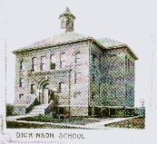
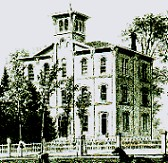

Public Schools of Mount Clemens
Early Mount Clemens was served by a number of rural school districts whose pupils were
housed in various quarters until 1857, when several districts in Mount Clemens and Clinton
and Harrison Townships were consolidated to form Union School District No. 1,
Fractional, of the Townships of Clinton and Harrison. This Union School District
was the forerunner of today's Mount Clemens Community School District.
After the Union School District was formed, its leaders began to construct schoolhouses to
meet the needs of the growing community. The following school buildings have been a part
of the Union School District and/or Mount Clemens Community School District since 1857:
CLEMENS SCHOOL - Originally called the Court Street School, the building
was erected at 141 Court St. in 1885. In about 1925 it was renamed in honor of Christian
Clemens, the founder of Mount Clemens. The old building was razed in 1958. A new
Christian Clemens school was opened on Stepnitz St., at the foot of Scott, in 1952. The
school was closed in 1988; in 1998 it houses the Salvation Army Harbor Light
Center.
COURT ST. SCHOOL - See CLEMENS SCHOOL, above.
|  | DICKINSON SCHOOL - Dickinson Elementary School was opened in April, 1896 at 154 Dickinson St., and was named for Don M. Dickinson, the man who donated the property. The building was razed in 1956. A new school was begun at St. Francis & Charbeneau streets in 1955 with the same name, but before the new building opened to students it was renamed Thomas A. Edison Elementary School. |
DONALDSON SCHOOL - A. T. Donaldson Elementary School was opened in 1876, next to the old Union School on the site of the present-day Macomb School (Grand and Southbound Gratiot). The school was originally called the Second Ward School, but in 1903 it was renamed in honor of Mount Clemens businessman, industrialist and mayor Andrew T. Donaldson, who had just retired from the school board. Donaldson School was closed and the building razed in 1954.
EDISON SCHOOL - Thomas A. Edison Elementary School was built at 24475 St. Francis in 1955 and closed in 1983. It later housed Mount Zion Christian School, and in 1999 became the lower grade campus of St. Mary Catholic School.
L. WADE FAST SCHOOL - L. Wade Fast Elementary School was built at 1070 Hampton in 1960 and closed in 1983. The school was named in honor of former Mount Clemens Superintendent of Schools L. Wade Fast, who served from 1919 to 1948. In 1998 it houses a Montessori school.
GRANT SCHOOL - Ulysses S. Grant Elementary School was opened in 1886 at 140 South Avenue (Southbound Gratiot), where the Beth Tephilath Moses synagogue stands in 1998. The building was replaced with a new, modern school at 400 Clinton River Drive (formerly 80 Prospect) in 1960. In June, 1968, the school's name was changed to Martin Luther King, Jr. Elementary School. The building is still in use in 1998 as a community education and preschool center.
INGLESIDE SCHOOL - Opened at 23130 Remick in Clinton Township in September, 1957, and closed in 1980. In 1998 the building is the home of Calvary Road Baptist Church and Faith Christian Schools.
KING SCHOOL - See GRANT SCHOOL; See also Edison Project's Martin Luther King Academy under MACOMB SCHOOL.
LINCOLN SCHOOL - Abraham Lincoln Elementary School was opened in 1909 at 91 Welts St. The building was razed in 1971 and a new school was built on the site in 1972. The school was finally closed in 1983, but is now used as the district's Early Childhood Education Center.
MACOMB SCHOOL - Alexander Macomb Elementary School was established in 1928 in the old high school (Union School building) at Grand and Southbound Gratiot. It was named for General Alexander Macomb, a hero of the War of 1812 for whom the county was also named. The building was torn down in 1962 and a modern school was erected on the site in 1963. Macomb School has variously served as an elementary school, junior high school, and home of the Edison Project's Martin Luther King Academy. It is still in use in 1998.
MOUNT CLEMENS HIGH SCHOOL - Mount Clemens High School was originally housed in the old Union School Building, erected at the site of the present-day Macomb School in 1859. The building originally housed all grades, but was converted to the exclusive use of the high school in April, 1902. The present Mount Clemens High School at 155 Cass Avenue was opened in 1924. A large addition was built in 1967-68, which provided a planetarium, auditorium, cafeteria, and physical education center. In 1998, the building houses both Mount Clemens High School and Middle School, and is known as the Secondary Education Complex. (Note: Click here for a list of graduates of Mount Clemens High School, 1869-1902).
SECOND WARD SCHOOL - See DONALDSON SCHOOL
SELFRIDGE SCHOOL - Selfridge Elementary School was opened on Selfridge Air Force Base in March, 1953. The school was built by the federal government and operated by the Mount Clemens school district. It was closed in 1988.
SEMINOLE SCHOOL - Seminole School was built in 1951 on Mulberry St. and is still in use in 1998. Seminole School was recognized as a state exemplary school in the 1990/91 school year.
| UNION SCHOOL - The first building erected by the Union School District No.1, Clinton and Harrison, in 1859. The building housed all grades and the public library; when Donaldson School was opened in 1876 to accomodate lower grades, the Union School became Mount Clemens High School. |  |
WASHINGTON SCHOOL - George Washington Elementary School was built at N. Rose and Groesbeck in 1954. It has served as an elementary as well as a junior high school at various times in its history. It is still in use in 1998.
WILSON SCHOOL - Woodrow Wilson Elementary School was built at the corner of S. Wilson and Church streets in 1918. The school closed in 1988, when the older portion of the building was razed to create a neighborhood playground. A newer addition to the building remains standing in 1998.
For futher information about public schools in Mount Clemens, we recommend:
[Home | Library Events | Search Catalog | Databases and E-Books | Reference Desk | Children's Services | Digital Media Archive | Genealogy | Local History ]